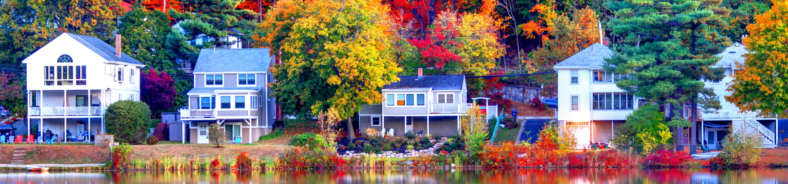

Everyday and cosmetic care
Plan preventive, family, and cosmetic dentistry with Dr. Nazila Bidabadi and the Brighton team.
Soft Touch Dentistry · Brighton Office
Visit Soft Touch Dentistry for preventive, cosmetic, and specialty dental care at our Brighton office in Allston.
Brighton Office
599 Cambridge St, Allston, MA 02134

One office, two familiar names
Brighton and Allston refer to the same Soft Touch Dentistry office. Use the address and Brighton phone below when planning your visit.
Looking for a dentist in Brighton? The practice address appears as Allston because the office sits at 599 Cambridge St. It is one physical location, with one designated phone and appointment path.
Care that stays connected
Plan preventive, family, and cosmetic dentistry with Dr. Nazila Bidabadi and the Brighton team.
Dr. Jacqueline Jacobson brings endodontic care to the office when a natural tooth may need focused treatment.
Dr. Mingfang Su provides periodontal expertise for patients who need focused gum care.
Start with what you need
Choose the care category that best matches your concern. Each link leads to the practice's full service information.
Your Brighton dental team
The Brighton office brings together complementary areas of dentistry. Your care plan depends on an individual evaluation.
President and Chief Cosmetic Dentist
Meet Dr. BidabadiEndodontist
Meet Dr. JacobsonPeriodontist
Meet Dr. SuChoose your next step
Request an appointment online or call the Brighton office to discuss the right next step for your visit.
Use the Brighton office contact page for scheduling requests and non-medical questions.
Go to the appointment formSpeak with the Brighton team about the right appointment path for your needs.
Call (617) 782-9250Use the verified office listing for navigation to 599 Cambridge St in Allston.
Get directionsBrighton office questions
The office is at 599 Cambridge St, Allston, MA 02134. It is the practice's Brighton office.
No. Brighton and Allston refer to the same physical office at 599 Cambridge St.
Call the Brighton office at (617) 782-9250.
Care at the Brighton office includes preventive and family dentistry, cosmetic dentistry, Invisalign, dental implants, periodontal care, root canal therapy, and emergency dentistry.
The Brighton team includes Dr. Nazila Bidabadi, endodontist Dr. Jacqueline Jacobson, and periodontist Dr. Mingfang Su.
Use the Brighton office contact page or call the office. The online form is intended for non-medical questions and correspondence.
Soft Touch Dentistry · Brighton Office
599 Cambridge St, Allston, MA 02134